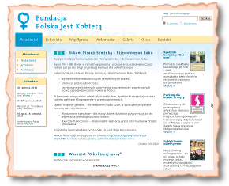
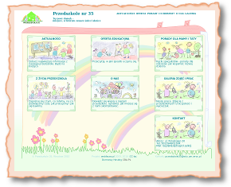

Nasze usługi
Modernizacja istniejących stron www
Każda strona internetowa posiada ogromny potencjał możliwości graficznych. Należy je tylko zauważyć i wykorzystać. Sprawimy, że Twoja stara strona www stanie się miejscem w Sieci, które będzie po prostu bardzo miło odwiedzić.
Przykład: modernizacja strony Fundacji Polska jest Kobietą :
Przed:

Po:
Projekt graficzny klienta
Tworzymy stronę na podstawie projektu graficznego klienta. Projekty przyjmujemy w formatach: PNG, JPG, BMP. Na podstawie takiego projektu (obejmującego zwykle kilka podstron) przygotowujemy projekt HTML (treść) + CSS (definicje wyglądu).
Indywidualny projekt graficzny
Wystarczy, że dasz nam kilka wskazówek, powiesz, jakie kolory wydają Ci się odpowiednie, a wykonamy dla Ciebie indywidualny projekt graficzny Twojej strony, a gdy Ci się on spodoba — zrealizujemy na jego podstawie Twoją stronę www.
Przykład: strony dla przedszkoli wrocławskich
Przedszkole nr 35:
Przedszkole nr 61: